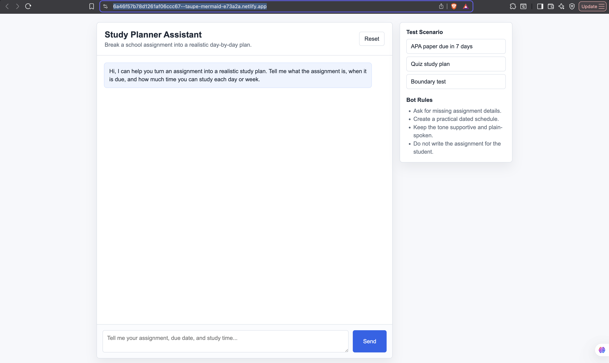

Hands-on documentation across multiple generative-AI experiences.
Back to all artifacts
Artifact 03 · Hands-on exploration
AI Lab Hands-On Documentation
A documented investigation of generative-AI tools that progresses from repeated prompt trials to research synthesis, design thinking, and a working Study Planner Assistant.
- Generative AI
- Design thinking
- Prompt testing
- Prototype validation
- Course context
- AIML-500 · Assignment 1.4 — AI Lab
- Artifact format
- Illustrated report and deployed browser prototype
- Primary audience
- Team members learning AI tools and project managers evaluating them
Demonstrate responsible tool evaluation and apply design thinking to a usable assistant.
Run repeated trials, test guided interactions, synthesize research, prototype, and validate.
ChatGPT Auto, Tutor Me, STORM AI, HTML/CSS/JavaScript, and Microsoft Word.
Description
Learning a tool means testing it deliberately.
The report preserves the prompts, screenshots, outputs, observations, and test results behind each activity. It compares three runs of one controlled prompt, documents a structured Tutor Me interaction, evaluates STORM’s research process, and applies the findings to a student-planning prototype.
ChatGPT Auto
Compare three separate runs for accuracy, clarity, consistency, examples, and adherence to constraints.
Tutor Me
Test guided planning, personalization, improved testing advice, explanation, and deadline adaptation.
STORM AI
Evaluate a research article and the multi-perspective BrainSTORMing process behind its synthesis.
Tangible artifact
The documented design-thinking cycle
- EmpathyUnderstand what users need from AI tools.
- DefinitionArticulate the problem and assess feasibility.
- IdeationBrainstorm AI-supported approaches.
- PrototypingBuild and test simple configurations or workflows.
- TestingValidate with real tasks and identify quality, bias, and fairness concerns.
- DocumentationCapture prompts, outputs, screenshots, and lessons for reuse.
Working evidence
From documented exploration to a deployed assistant.
The Study Planner Assistant turns assignment details, due dates, and available work time into an actionable plan. Its visible boundary rules ask for missing information and redirect requests that would have the assistant complete the student’s assignment.

Evaluation approach
Compare outputs against defined criteria.
Quality and usefulness
- Relevance to the requested task
- Clarity and completeness
- Consistency across repeated trials
- Ease of revising or verifying the result
Responsible-use considerations
- Accuracy and unsupported claims
- Bias and fairness concerns
- Appropriate human review
- Privacy and task boundaries
Process
How the documentation was created
I ran one constrained prompt in three separate ChatGPT Auto sessions, recorded how the answers varied, completed the required Tutor Me interactions, evaluated a STORM article and its BrainSTORMing process, then translated the findings into a design-thinking brief and tested prototype.
Professional useThe result demonstrates a repeatable pattern for adopting emerging tools: define the user need, preserve evidence, compare outputs, test boundaries, and document the result for others.
Value proposition of the artifact
Why this work matters
Unique value
This artifact demonstrates that I can learn emerging tools quickly, compare them systematically, and document processes clearly for others.
Organizational relevance
Teams implementing AI need repeatable learning resources. The documentation shows my ability to support onboarding, evaluation, and responsible adoption.